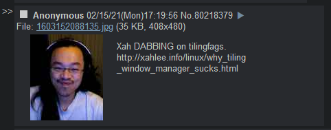

A Case for Tiling Window Manager Usage
Created: 2021-01-23 | Modified: 2021-03-13
I've recently been hearing more and more arguments against the usage of tiling window managers. More specifically, I've been hearing about people disliking TWM usage because of the need to configure things yourself, which to them is "a waste of time". They'd rather run something that immediately takes care of configuration for them. This narrative has been popping up more and more on sites like /g/ (if you don't know, you won't know) ), lainchan, forums, etc. I'll debunk Xah's "Why Tiling Window Manager Sucks" article, as well as some of the typical arguments brought up when speaking against TWMs...
Typical Statements/Questions
"Linux is only free if you don't value your time"
People spew this when they want to quickly dismiss TWMs, using Linux, or really anything to do with having to learn computing. They say, "My time is much too valuable to learn something useless like that!", "Linux is only free if you don't value your time!", "It's a timesink", "I'd rather actually get stuff done by using Windows", or "I have no desire to learn low level programming, Python just works!". People using these arguments seem to always have a superiority/inferiority complex. To them, if they admit to themselves that there is a better way to do what they're doing, it's like admitting that they are intellectually inferior for not knowing it. This is why you get such highly opinionated people on forums/imageboards such as /g/ or r*ddit who religiously object the usage of x but are die-hard fans/evangelists of y. Of course, if they just prefer to use something other than a TWM without being ignorant to how they work, that's perfectly valid, as it is just a matter of perference.
These people have a tendency to repeat this without ever having used any TWM. Don't forget, as the saying goes, don't knock it till you (really) try it!
In addition, using Linux/TWMs is a fantastic way to learn how computers really work. This is especially important if you are or want to start working in computing/IT related fields. Even though you could probably get away with only using Windows/Mac OS X your entire career, it's not something I'd want to risk. By using Linux, you can do whatever you want with YOUR computer. You just don't have the same freedoms while using closed source software, but I digress.
Debunking Xah Lee's "Why Tiling Window Manager Sucks" Article
Xah's Sites
Quick Preface
First, I'd like to recognize the fact that Xah Lee is a genius. He has contributed immensely to the world of modern day computing and mathematics, and should be recognized as such.
That being said, I believe that his understanding (or misunderstanding) of TWMs is: Grossly miscalculated, and comes from a point of view of ignorance and negative bias on the subject (to put it nicely, Xah has a massive hatred of all things Unix, and mostly rightfully so).
In case you don't know, his article is one that very generally bashes all TWMs. If you are a TWM consumer, like myself, someone who has tried the majority of TWMs out there, you are able to see that he doesn't know what he's talking about and hasn't used them. He tries to make up for his weak arguments through ad-homs, and it shows.
Debunking
"tried xmonad today for real. Currently, 1 hour into it. Tiling windows is unusable and inefficient."
Let me refer back to my "Linux is only free if you don't value your time" section. To be able to say that "tiling window managers are unusable and inefficient" after only having using one for "1 hour" is not what I'd call giving something a chance... This is esspecially true when talking about tiling window managers. It's going to be really hard to build up the muscle memory required in only one hour of use.
"Complete esoteric set of keys you need to memorize just for the tiling-window mechanism. Also, standard keys such as Alt+F4 are now screwed."
He says standard, but these keys are only the Windows standard. Anyway, seeing as you can implement Alt+F4 to kill a window in ~ 30 seconds or less on any TWM, I don't think you can call that a "problem". If it is such a deal braker, add it yourself. That's the point of TWMs: They're extensible, and are made to be configured the way YOU want it, not the way THEY want it. Also, the defaults take two hours to memorize, and one week to master and get the required muscle memory, which isn't a long time.
"More Combo keys = RSI. I type more than any Haskell coder on this earth."
Combo keys/chords won't cause RSI if you use chords effectively. Chords should be a max of two keys at a time. If you do this, you can press one key per hand, effectively breaking the chord back down to single keys (left hand for modifier key, right for alphabet/whatever key). If you do this, which is the proper way, it's not strenuous like a one-handed chord.
Also, as I said, you don't have to use combo keys/chords if you don't want to. You can always change them yourself.
"Encroach on each app's keys. This means, you'll spend time to config each app, or diddle with the global mod key setting. This means hours to be spent down the road."
I think he's saying that by using the Alt key as modifier, you'll end up having conflicts with some programs (explicitly Emacs, in his case). This is true, but mitigated easily: Simply change the $Mod (modifier) variable from Alt to Windows key. NO programs use the Windows key on Linux, therefore no more conflicts. I'm not sure why he says "changing the mod key will take hours" when that's quite obviously not true. It takes seconds to change something in a config. file let alone the global modifier variable...
"Completely screwing emacs's keys. (No, remapping to any of Super, Hyper, Menu, CapsLock keys won't help. All modifier keys are used up in my emacs for many purposes, including inserting math symbols.)"
As I said, just remap the modifier key to the Windows key. As far as I know, Emacs doesn't use the Windows key.
"If all you do is text terminals, that's ok. But as soon as you have browser, image viewer, image editor, text/voice/video chat programs, math/scientific apps, …, each really needs its own optimal position/size."
This is a very fair point. Tiling window managers are optimal when having a terminal based workflow. This is why I predominately use TUI programs. 1) They cut down on "bloat", and 2) are much more extensible than your average GUI because of everything being text.
"One symptom of tiling windows inefficiency is the so-called fibonacci layout."
As far as I know, no one really uses this. All I can really do is speak for myself, but I feel like the general consensus is that it's mostly just decorative as the windows it ends up creating are too small.
"Suboptimal window size problem when windows are forced into a table layout. Notice the squashed clock, and wrapped lines in terminal. [image source http://dwm.suckless.org/patches/fibonacci]"

This is the image in reference.
The claim that "(There are) suboptimal window size problem when windows are forced into a table layout" is out of ignorance. He wouldn't have said that if he knew how dwm functioned in the first place, clearly shown by him saying "tried xmonad today for real. Currently, 1 hour into it. Tiling windows is unusable and inefficient". dwm uses a primary/secondary layout, meaning that one half of the screen is the primary window, in this case being the browser, and the other half is for secondary windows.

This is when he devolves into ad-homs and making claims you can't even challenge. This is one of them "(but in fact, Microsoft Windows have a key sequence system starting with Alt key, that is actually the most efficient system for keybinding". This is hard to refute. I'm not sure where he got this evidence. It probably isn't based on any concrete fact.
My Conclusion
By breaking down each his main points against TWMs, it shows that he really isn't saying a whole lot. All he proves is that he has one hour worth of knowledge on TWMs.
2020-02-16

Another damn post on /g/.